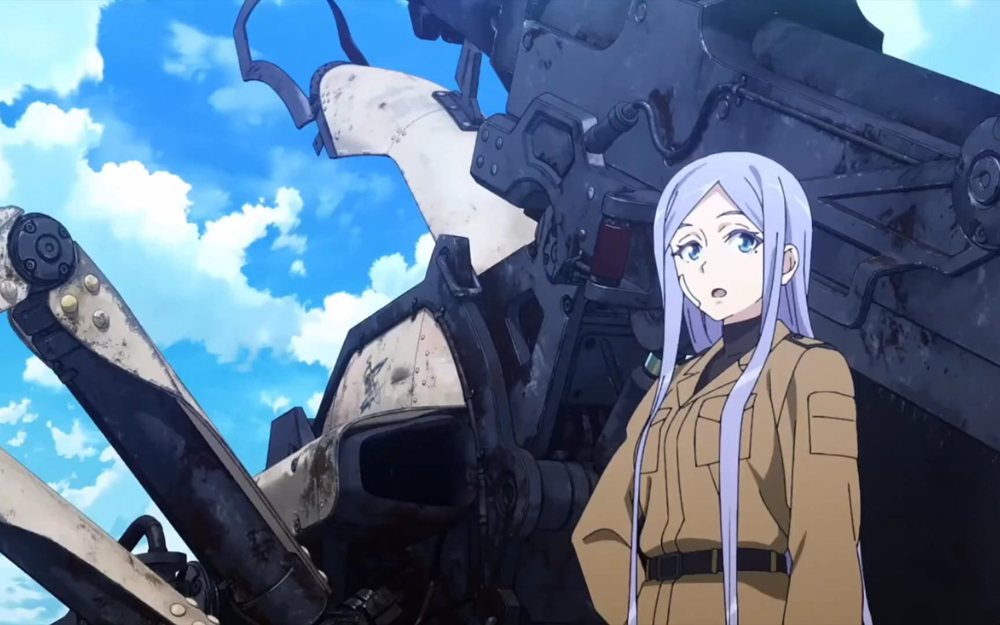

86―不存在的战区―
动漫
小说简介



| 话数 | 日文标题 | 英文标题 | 中文标题 | 剧本 | 分镜 | 演出 | 作画监督 | 总作画监督 |
|---|---|---|---|---|---|---|---|---|
| 第一期 | ||||||||
| Episode 01 | アンダーテイカー | Undertaker | 送葬者 | 大野敏哉 | 石井俊匡 | 石井俊匡 | 川上哲也 | 川上哲也 |
| Episode 02 | スピアヘッド | Spearhead | 先锋战队 | 大野敏哉 | 仁科くにやす | 石井俊匡 | 伊藤美奈、小川莉奈 二松真理、波部崇 | 川上哲也 |
| Episode 03 | 死にたくない | I Don't Want to Die | 不想死 | 大野敏哉 | 安藤良 | 安藤良 | 本村晃一、杉生祐一 | 川上哲也 |
| Episode 04 | 本当の名前を | Real Name | 真正的名字 | 大野敏哉 | 河野亚矢子 | 安藤良 | 牧野和俊、五十子忍 | 猪口美绪 |
| Episode 05 | 私も一緒に | I'm With You | 我也一起 | 砂山藏澄 | 髙橋さつき | 髙橋さつき | 波部崇、二松真理 | 川上哲也 |
| Episode 06 | 最後まで | Through to the End | 直到最后 | 大野敏哉 | 仁科くにやす | 仁科くにやす | 猪口美绪、辻彩夏 | 久野纱世 |
| Episode 07 | 忘れないでいてくれますか？ | Will You Remember Me? | 能一直记得我们吗？ | 永井千晶 | 伊藤智彦 | 伊藤智彦 | 笠原由博 | 川上哲也 |
| Episode 08 | 行こう | Let's Go | 走吧 | 砂山藏澄 | 许琮 | 安井贵司 | 小川茜、末田晃大 | 川上哲也 |
| Episode 09 | さよなら | Goodbye | 再见 | 永井千晶 | 松本显吾 | 河原龙太 | 樋口香织、五十子忍 成川多加志 | 川上哲也 猪口美绪 |
| Episode 10 | ありがとう | Thank You | 感谢 | 大野敏哉 | 森大贵 | 髙橋さつき | 辻彩夏、杉生祐一 降矢瑞生 | 川上哲也 |
| Episode 11 | 行くよ | Here We Go | 走吧 | 砂山藏澄 | 安藤良 | 安藤良 | 牧野和俊、小川莉奈 本村晃一 | 川上哲也 猪口美绪 |
| 第二期 | ||||||||
| Episode 12 | ようこそ | Welcome | 欢迎莅临 | 永井千晶 | 石井俊匡 | 安藤良 | 波部崇、降矢瑞生 辻彩夏、二松真理 | 川上哲也 |
| Episode 13 | 今更そんなこと | It's Too Late | 那种事，事到如今 | 大野敏哉 | 仁科くにやす | 石山タカ明 | 本村晃一、樋口香里 | 久野纱世 |
| Episode 14 | よろしく | Glad to Be Here | 请多指教 | 砂山藏澄 | 髙橋さつき | 髙橋さつき | 成川多加志、二松真理 森悦史、栗田聪美 | 川上哲也 杉生祐一 |
| Episode 15 | おかえりなさい | Welcome Back | 欢迎归来 | 大野敏哉 | 伊藤智彦 | 河原龙太 | 小川莉奈、伊藤美奈 安田京弘 | 川上哲也 |
| Episode 16 | それでも | Even So | 即使如此 | 永井千晶 | 安藤良 | 安藤良 | 辻彩夏、稻田正辉 降矢瑞生、小川莉奈 真壁诚 | 川上哲也 |
| Episode 17 | 忘れません | I Won't Forget | 我不会忘记 | 大野敏哉 | 石黑恭平 | 前屋俊广 | 波部崇、真壁诚 栗田聪美 | 杉生祐一 |
| Episode 18 | 本当は | The Truth Is | 真心话 | 砂山藏澄 | 相泽伽月 | 德本善信 | 小川莉奈、本村晃一 安田京弘、伊藤美奈 市川敬三、成川多加志 樋口香里、杉生祐一 | 川上哲也 |
| Episode 19 | いっそ このまま | Stay This Way Forever | 干脆就这么走下去 | 永井千晶 | 河原龙太 | 河原龙太 | 栗田聪美、稻田正辉 成川多加志、小川莉奈 樋口香里、市川敬三 伊藤美奈、本村晃一 | 杉生祐一 川上哲也 |
| Episode 20 | 死ぬまで一緒に | Together Unto Death | 至死相伴 | 大野敏哉 | 伊藤智彦 | 四之宫春 | 辻彩夏、波部崇 降矢瑞生、真壁诚 笠原由博、安田京弘 伊藤美奈 | 川上哲也 |
| Episode 21 | もうこれしか | All That's Left | 仅剩如此 | 砂山藏澄 | 安藤良 | 安藤良 | 真壁诚、安田京弘 伊藤美奈、降矢瑞生 本村晃一、波部崇 成川多加志、小川莉奈 稻田正辉、樋口香里 二松真理 | 川上哲也 杉生祐一 |
| Episode 22 | シン | Shin | 辛 | 大野敏哉 | 石井俊匡 | 石井俊匡 | 成川多加志、真壁诚 伊藤美奈、波部崇 小川莉奈、稻田正辉 樋口香里、安田京弘 | 川上哲也 杉生祐一 |
| Episode 23 | ハンドラー・ワン | Handler One | 管制一号 | 伊藤智彦 | 石井俊匡 | 河原龙太 | 石井俊匡 樋口香里、降矢瑞生 杉生祐一、安田京弘 | 川上哲也 |
86―不存在的战区―电视动画片《86-不存在的战区-》改编自安里朝都原作、shirabii负责插画的同名轻小说作品，
于2020年3月15日电击文库春祭上宣布制作决定 。
该片由A-1Pictures负责制作，第1单元（第1~11集）于2021年4月10日至6月19日播出，第2单元（第12~23集）于2021年10月2日至2022年3月19日播出。全23集。
第一章于2020年3月15日电击文库春祭上宣布制作决定 。
该片由A-1Pictures负责制作，第1单元（第1~11集）于2021年4月10日至6月19日播出，第2单元（第12~23集）于2021年10月2日至2022年3月19日播出。全23集。
第二章
小说
《86 -不存在的战区-》（86―エイティシックス―）是由安里アサト创作，しらび插画的一部轻小说，并有同名改编漫画。
作品曾获电击小说大奖23届大赏，2018年这本轻小说真厉害!第2位，2019年这本轻小说真厉害!第5位。是一部非常治愈的小说
小说目前更新至第14篇。
作品曾获电击小说大奖23届大赏，2018年这本轻小说真厉害!第2位，2019年这本轻小说真厉害!第5位。
小说目前更新至第14篇。
第1单元

为了应对吉亚迪所开发出的完全独立无人战斗兵器“军团”的入侵，其邻国圣格诺利亚共和国开发了无人战斗兵器毁灭之力。
但是，无人战斗机只是空有名号，实际是没有被认可为”人“的人们——86——驾驶，被当作道具来使用。
由”86“所组成的部队“先锋战队”的队长少年・辛艾，在只能等待着死亡的令人绝望的战场上为了某个目的而战斗着。
在那里，共和国军队的精英・蕾娜就任了新任指挥管制官。她小时候有着被86所救助过的经历，因此想把被作为“人形猪”而遭到轻视的他们作为正常人类来对待。
只不过是为了战斗而被作为道具使用的少年以及被寄予了未来期望的精英才女，本不应当有所交集的两人，在激烈的战斗中看到了未来——
但是，无人战斗机只是空有名号，实际是没有被认可为”人“的人们——86——驾驶，被当作道具来使用。
由”86“所组成的部队“先锋战队”的队长少年・辛艾，在只能等待着死亡的令人绝望的战场上为了某个目的而战斗着。
在那里，共和国军队的精英・蕾娜就任了新任指挥管制官。她小时候有着被86所救助过的经历，因此想把被作为“人形猪”而遭到轻视的他们作为正常人类来对待。
只不过是为了战斗而被作为道具使用的少年以及被寄予了未来期望的精英才女，本不应当有所交集的两人，在激烈的战斗中看到了未来——
第2单元

东线战线第一战场第一防卫战队，俗称“先锋”战队。
他们是圣玛格诺利亚共和国“排斥”出来的“86”的少男少女。
投身于与齐亚德帝国投入的无人驾驶机器“军团”的残酷战斗中。 随着他们人数的减少“先锋”战队被分配到了 “特别侦察任务”，而成功率为0%，任务时间不限。
这几乎是一个来自国家的死亡判决。
队长辛艾·诺赞、莱顿·修贾、赛欧托·利卡、安琪·艾玛和可蕾娜·库克米拉五人。
尽管如此，选择继续前进，继续战斗。
并不是为了追求希望或未来。
“战场（这里）”是他们唯一的归宿。
讽刺的是，这个愿望在不知不觉间踏入的新天地里实现了。
他们是圣玛格诺利亚共和国“排斥”出来的“86”的少男少女。
投身于与齐亚德帝国投入的无人驾驶机器“军团”的残酷战斗中。 随着他们人数的减少“先锋”战队被分配到了 “特别侦察任务”，而成功率为0%，任务时间不限。
这几乎是一个来自国家的死亡判决。
队长辛艾·诺赞、莱顿·修贾、赛欧托·利卡、安琪·艾玛和可蕾娜·库克米拉五人。
尽管如此，选择继续前进，继续战斗。
并不是为了追求希望或未来。
“战场（这里）”是他们唯一的归宿。
讽刺的是，这个愿望在不知不觉间踏入的新天地里实现了。
摘选自百度百科,萌娘百科。
2025-10-15
2025-10-15